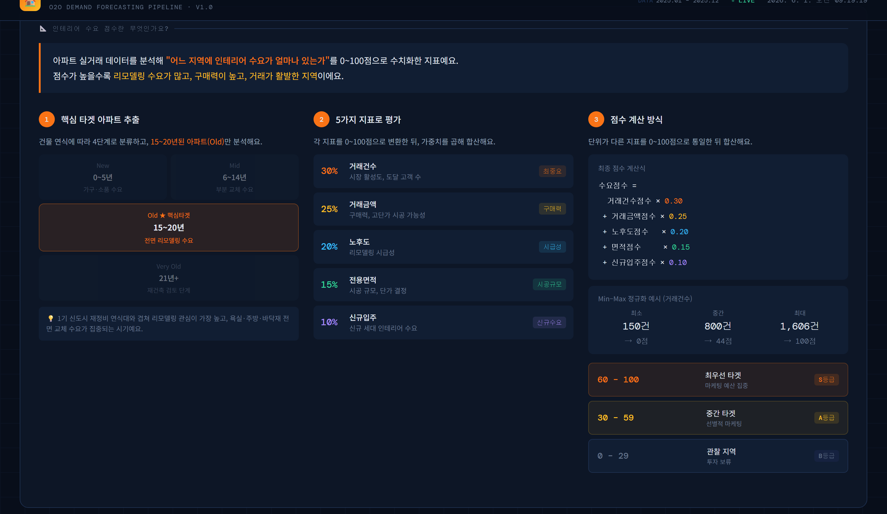
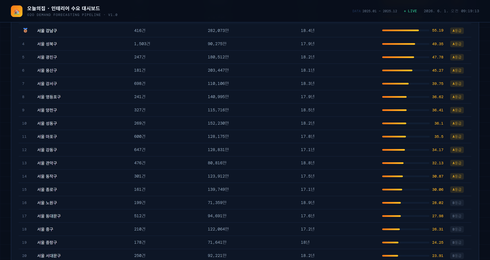

데이타트렌드
사원 · AI사업전략
- AI 바우처 사업수행계획서 작성 및 관련 자료 조사
- AI 도입 기업 대상 솔루션 제안 자료 작성
- 사업 현황 분석 및 보고서 작성

Data Engineering · AI Development
데이터 엔지니어 / AI 개발자
RAG 시스템·Vision-Language Agent·데이터 파이프라인을 직접 설계하고 end-to-end로 배포까지 연결합니다. 건설현장 법령 판단 RAG, CCTV 사고 분석 VL Agent, 공공 API 수요예측 Flask 서비스를 단독 구현했습니다.
About
직관을 뒷받침하는 객관적 데이터와 최신 AI 기술을 활용해 설득력 있는 전략을 도출합니다.
데이터 분석에 머무르지 않고 최신 AI 기술과 툴을 적극적으로 학습·도입하여 비즈니스 인사이트의 효율성과 정확도를 극대화하는 것을 목표로 하고 있습니다.
과거 PM 경험을 바탕으로, 도출된 결과물을 다양한 직군과 명확히 공유하며 실제 비즈니스 가치로 전환하는 유연한 소통을 지향합니다.
Experience
사원 · AI사업전략
Education
미디어공학과 · 학점 3.53 / 4.5
미디어 기술, 데이터 처리, 소프트웨어 공학 관련 전공 과목 이수
Certificates
한국데이터산업진흥원
한국생산성본부
한국정보통신자격협회
Portfolio Projects
이력서에 정리된 프로젝트 목록을 기준으로, 실제 화면과 산출물이 있는 프로젝트는 스크린샷을 함께 배치했습니다.

건설현장 CCTV MP4 영상을 프레임 단위로 분석해 사고 발생 여부, 사고 유형, 사고 원인을 자동 분석하는 Vision-Language Agent 시스템입니다.
원본 영상 전체를 LLM에 넣는 대신, 사고 전후 핵심 프레임을 추출해 Contact Sheet 이미지를 생성함으로써 API 연동 비용을 최소화하였습니다. 최종 분석 데이터는 SPilot ERD 스키마에 맞는 DB Payload 규격으로 자동 가공 연동됩니다.


건설현장 사고 시나리오를 입력받아 산업안전보건법·중대재해처벌법 위반 조항과 책임 주체를 판단하는 RAG 시스템입니다.
법령 본문과 별표/표를 별도 ChromaDB에 분리 임베딩한 Text RAG + Table RAG 이중 구조로 검색 정확도를 높였습니다. 질문 유형별 direct route와 관리자/일반 계정 분리, 대화 이력 SQLite 저장, CLI+웹 챗봇 UI 2종을 구현했습니다.

다나와 PC 부품 가격 자동 수집, 이상치 탐지, 가격 예측 모델, IT 뉴스 대시보드를 연결한 분석 서비스입니다.
단독 개발로 크롤링, SQLite 데이터 모델링, 분석 로직, Streamlit 대시보드를 연결해 가격·뉴스 데이터 흐름을 통합했습니다.


Unity2D 기반 게임 프로젝트 팀장 및 기획 총괄, 역할 분배와 일정 관리를 포함해 전 과정을 리딩했습니다.
PM 역할로 게임 콘셉트와 개발 범위를 정리하고, 팀원 역할 분배와 진행 관리를 맡아 완성 화면까지 이끌었습니다.


SQL, RFM 분석, 머신러닝, 시계열 예측, SQLD까지 직접 설계하고 수행한 이커머스 분석 파이프라인입니다.
단독 개발로 분석 주제 선정부터 notebook 실험, RFM·Prophet·SHAP 결과 정리와 대시보드 시각화까지 수행했습니다.


Streamlit 기반 영단어 학습 웹 앱으로, 학습 진도 추적과 퀴즈, 단어장, 통계 화면을 구현했습니다.
단독 개발로 학습 흐름, 퀴즈 상태 관리, 단어장 관리, 통계 화면을 구성하며 사용자 중심 앱 구조를 연습했습니다.


오늘의집 O2O 서비스팀 시나리오 기반, 102개 시군구 인테리어 수요 점수를 산출하는 end-to-end 파이프라인입니다.
국토교통부 매매·전월세·건축HUB 대수선 등 공공 API 5종을 자동 수집하고, 7개 지표 Min-Max 정규화 + 가중합산으로 수요 점수(0~100)와 S/A/B 등급을 산출합니다. Flask 웹 서버 + 네이버 지도 연동 + AI 챗봇 2종(Ollama)까지 배포했습니다.
Project Details
주요 개발·PM 경험이 뚜렷한 네 프로젝트를 중심으로 문제 정의부터 역할, 결과, 개선점까지 정리했습니다.
Strengths
빅데이터분석기사 보유. 공공 API 5종 파이프라인, RFM·Prophet·SHAP 실전 적용, Flask 서비스 배포까지 end-to-end 구현 경험.
Text RAG + Table RAG 이중 구조 직접 설계, CCTV 영상 → Contact Sheet → VL 판단 파이프라인 구현, Colab 원격 LLM 서버 아키텍처 구성.
네트워크관리사 2급. Flask RESTful API 설계, SQLite DB 모델링, TypeScript 프론트엔드, Django 앱 개발 경험 보유.
Preference
Contact
프로젝트 협업, 채용 제안, 포트폴리오 피드백은 이메일 또는 GitHub로 연락해 주세요.